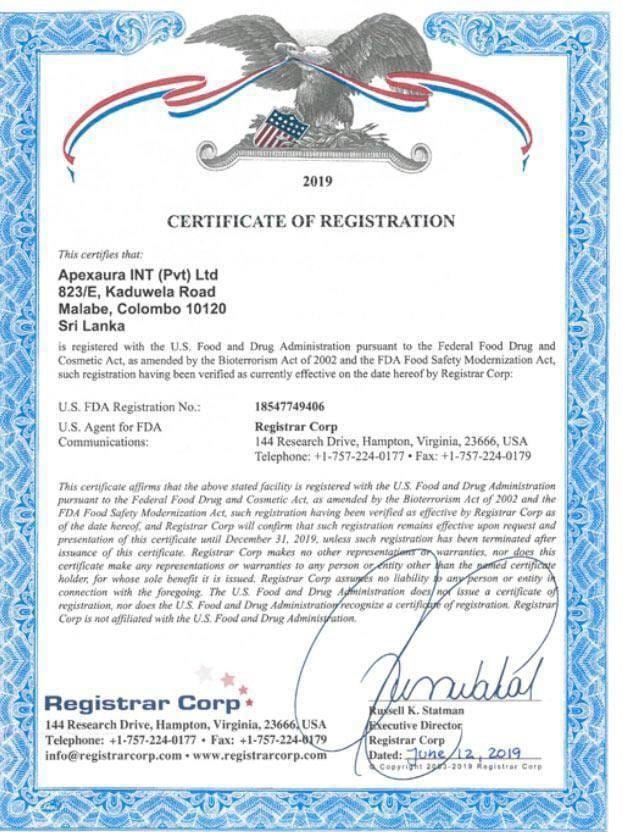

back to HOME

Why We Display the HACCP Certificate
We proudly showcase the HACCP (Hazard Analysis and Critical Control Points) certificate provided to our product supplier. This certification proves that the products we sell are sourced from a company that strictly follows international food safety and hygiene standards.
The HACCP system ensures that every step in the production process — from raw material handling to packaging — is closely monitored to prevent contamination, maintain cleanliness, and deliver safe, high-quality products to customers.
By displaying this certificate, we want our customers to know that:
- We prioritize health and safety
- Our products come from trusted and certified sources
- You can shop with confidence and peace of mind
This certificate is not just a document — it is a reflection of our commitment to quality and care